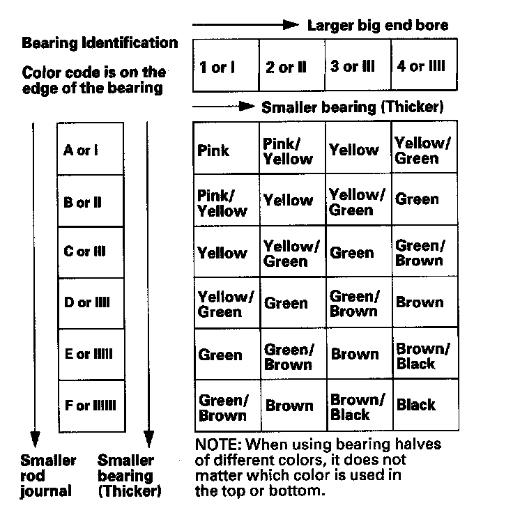

Connecting Rod Bearing Replacement
Connecting Rod Bearing ReplacementRod Bearing Clearance Inspection
1. Remove the connecting rod cap and bearing half.
2. Clean the crankshaft rod journal and bearing half with a clean shop towel.
3. Place a strip of plastigage across the rod journal.
4. Reinstall the bearing half and cap, and torque the bolts.
NOTE:
^ Apply new engine oil to the bolt threads and flanges.
^ Do not rotate the crankshaft during inspection.
Tightening Torque: 20 N-m (2.0 kgf-m, 14 lbf-ft) + 90°
5. Remove the rod cap and bearing half and measure the widest part of the plastigage.
6. If the plastigage measures too wide or too narrow, remove the upper half of the bearing, then install a new, complete bearing with the same color code, and recheck the clearance. Do not file, shim, or scrape the bearings or the caps to adjust clearance.
7. If the plastigage shows the clearance is still incorrect, try the next larger or smaller bearing (the color listed above or below that one), and check clearance again. If the proper clearance cannot be obtained by using the appropriate larger or smaller bearings, replace the crankshaft and start over.
Rod Bearing Selection
Each rod falls into one of four tolerance ranges, from 0 to 0.024 mm (0.0009 in.), in 0.006 mm (0.0002 in.) increments, depending on the size of its big end bore. It's then stamped with a number or bar (1, 2, 3, or 4/I, II, III, or IIII) indicating the range. You may find any combination of 1, 2, 3, or 4/I, II, III, or IIII in any engine.
Normal Bore Size: 60.0 mm (2.36 in.)
Inspect the connecting rod for cracks and heat damage.
Connecting Rod Journal Code Locations
Numbers or bars have been stamped on the side of each connecting rod as a code for the size of the big end. Use them, and the letters or bars stamped on the crank (codes for rod journal size) to choose the correct bearings. If the codes are indecipherable because of an accumulation of dirt and dust, do not scrub them with a wire brush or scraper. Clean them only with solvent or detergent.

